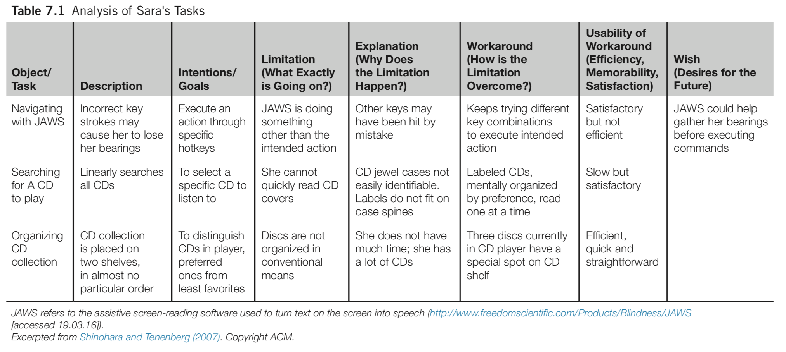
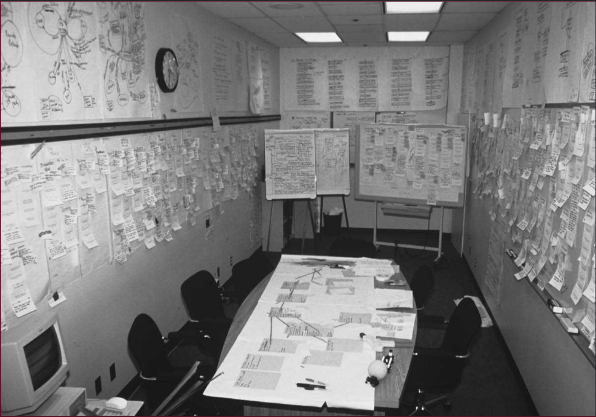
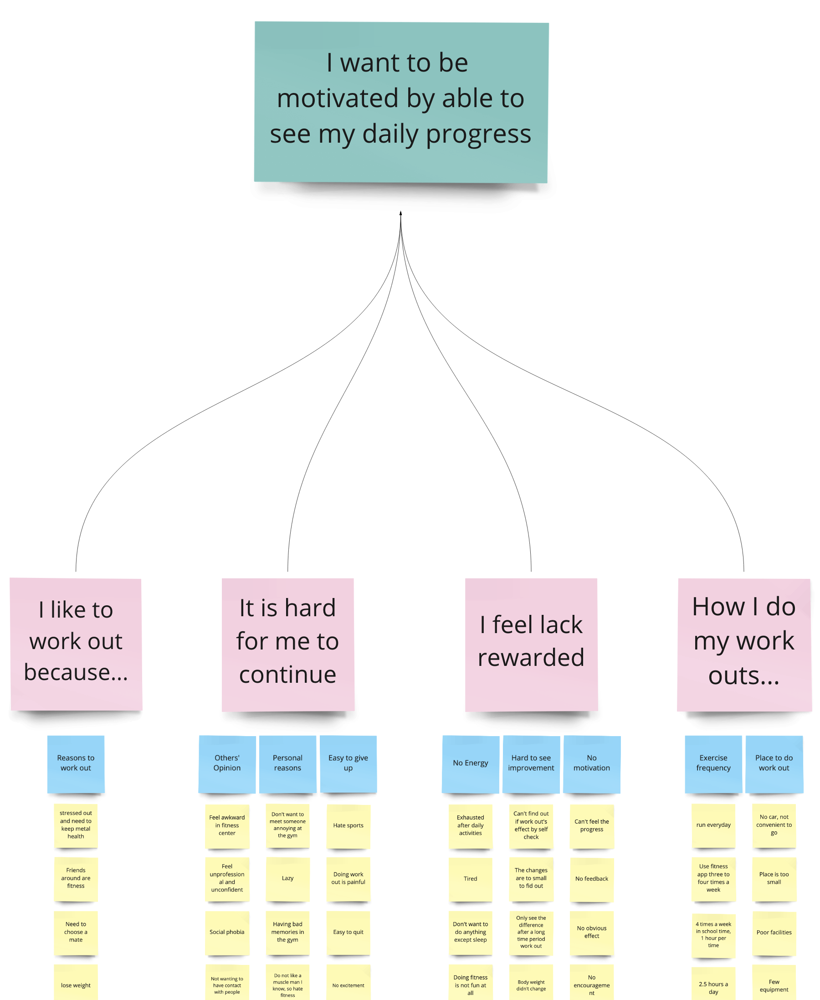

Human Computer Interaction:
User research
2/2/23
Week FOUR
Today
- Q and A from last time
- Discussion leading ()
- Design Critique ()
- Article Presentation ()
- Figma tutorial ()
- Break
- User Research
- Readings
Q and A from last time
Learning
User research
empirical ways of studying people (users)
- experiments
- surveys
- diaries
- case studies
- interviews
- ethnography
- automated data collection
- biometric study
the preceding is not an exhaustive list
For example, see Olson and Kellogg (2014) for a different list of ways hci professionals and scholars study the interactions of people and computers. The above list is based on Lazar, Feng, and Hochheiser (2017).
experiments
Wikipedia tells us that an experiment is a procedure used to support or refute a hypothesis, model, or theory.
For example, suppose we hypothesize that programmers can complete a specific task faster using one IDE (integrated development environment) than in another IDE.
You can imagine an experiment to support or refute this hypothesis.
experiment characteristics
It is a hallmark of experiments that the experimenter tries to control as many variables as possible. For the IDE experiment, what could you control? Task lighting, machine and peripherals, chair, desk and ambient noice all come to mind as possible confounds.
Experiments focus on dependent and independent variables, also referred to as \(y\) and \(x\), response and treatment, regressand and regressor, predicted and predictor, unknown and known, output and input.
Experiments randomly allocate subjects to treatments.
quasi-experimentation
Cook and Campbell wrote an interesting book called Quasi-Experimentation about the possibilities for observation of nature that would be similar to experimentation except that the researcher can’t control the variables and instead tries to collect as much information as possible so that all factors are accounted for.
surveys
Surveys allow you to gather information from many more people than would be practical in other methods. Their main drawback is that the researcher can not react to the survey subject. This raises a lot of problems.
You have to pilot surveys with a small group to gain confidence that the questions have construct validity. In other words, you want to gain confidence that the questions are asking what you think they are asking.
Many validated survey instruments exist, including some in HCI. Researchers try to validate instruments by asking many similar questions and phrasing some positively and others negatively to see how people answer them.
diaries
Some researchers ask people to keep a diary while using an application over a period of weeks or months. The key problem here is getting people to maintain a habit of diary entries.
case studies
Case studies are in-depth studies of specific instances within specific real-life context, according to Lazar, Feng, and Hochheiser (2017). They may concern a single specific instance or a small set of instances.
Case studies typically have small sample sizes so sample selection is a key challenge.
case study example
Observing Sara is a well-known case study conducted by RIT faculty member Kristen Shinohara. She conducted 6 two-hour sessions in which Sara demonstrated her use of assistive technologies for the blind. The generated material included notes, audio recordings, interviewer reactions, and photographs. Analysis included task tables and detailed descriptions. The result of the study was a set of design guidelines.
task table from Shinohara and Tenenberg (2007)
goals of case studies
According to Lazar, Feng, and Hochheiser (2017), the following goals apply to HCI case studies.
- exploration: understanding novel problems or situations, often in hopes of informing new designs
- explanation: developing models to understand a context of technology use
- description: documenting a system, a context of technology use, or a process leading to a proposed design
- demonstration: showing how a new tool was successfully used
interviews
Interviewing is an open-ended, exploratory technique. It affords the flexibility to react to what the interviewee says as well as to the interviewe’s unspoken signals.
Interviewing requires practice to develop skill. You are unlikely to be a good interviewer in your first few, perhaps many, interviews.
Analysis of interviews is likewise challenging and time-consuming. One hour of interviewing may lead to ten hours of analysis, according to Lazar, Feng, and Hochheiser (2017).
Both interviews and surveys require the participant to remember something from the past, not an easy task.
contextual inquiry
Contextual inquiry is an interview-oriented technique that requires the interview to occur in the workplace during work. An important tenet of contextual inquiry is that the interviewer not examine her notes until an interpretation session, which is conducted under strict rules.
In the interpretation session, transcribe interview notes to affinity notes (post-it notes or a digital equivalent) and arrange them on an affinity diagram constructed in a bottom-up manner. Write affinity notes in the first person as the interviewee. After clustering, add labels at different hierarchical levels. The process is described in detail in Holtzblatt, Wendell, and Wood (2005).
ethnography
Ethnography is a challenging combination of observation, interviews, and participation in a community. It originated with anthropologists and has been adopted in other fields, including sociology and HCI.
The ethnographer immerses herself in the environment of the people being studied. One famous ethnographer in information systems earned a medical doctor degree while studying radiologists intensively over a period of seven years. (HCI researchers rarely have the opportunity to conduct ethnographic research because of time and money limitations but, when they are able to, a remarkably deep understanding of user needs results.)
automated data collection
Online traffic is a rich source of data, for better or worse. Google Flu Trends exemplifies the former. Facebook’s Emotions study of 2014 may exemplify the latter. (Facebook altered the news feeds of half a million people to see if they could alter their moods.)
A/B testing, where visitors are served one of two versions of a web artifact, is the most common method for HCI professionals.
biometric study
Eye tracking was the most well-known form of biometric study until the advent of smart watches. Other types of physiological data used in HCI research includes electrodermal activity, cardiovascular data, respiration, muscular and skeletal positioning, muscle tension, and brain activity.
User research as described and as practiced

Contextual Inquiry
Contextual Inquiry Process
- Prepare for workplace interviews / observations
- Conduct workplace interviews / observations
- Interpret workplace interviews / observations
Immersion
Affinity Mapping
I usually call this affinity diagramming but every online source I’ve found uses the terms interchangeably. Jacek calls it WAAD (work activity affinity diagramming).
Good affinity diagrams start with good affinity notes
Good affinity notes happen in an interview
Getting there in the interview
- Transition to work focus
- Observe and discuss
- Be nosy
- Take notes (avoid using a laptop)
- Know what to take notes about!
What to take notes about
- The user’s role
- The user’s responsibilities
- The user’s communication types
- The user’s organization of physical space
- The user’s artifacts (get copies if possible)
- Breakdowns in the user’s work
- What works and what doesn’t
Interview activities
- Share design ideas stimulated by events
- Draw the physical space
- Take photos (if you get permission)
Wrap up
- Summarize what you learned, check your high-level understanding
- Ask about pet issues
- Give tips about system use (avoid doing so earlier)
- Thank the user and give a gift if possible
- Be sure you followed the tips in Holtzblatt, Wendell, and Wood (2005) in Tables 4-1 through 4-5!
Views of the CI interview


Interpret the contextual inquiry interviews
Intro
- Today usually done via FigJam or Miro instead of on a wall with post-its
- Should happen 48 hours after the interviews (or sooner)
- You should NOT talk to your teammates (or anyone else) about the interviews before the interpretation session
- You should never do it alone
- Must be synchronous
- Usually takes all day
Interpretation session steps overview
- Create affinity notes from your atomic observations
- Add 500 affinity notes to the diagram
- Organize the affinity notes by similarity
- Add the bottom level of labels above the affinity notes
- Add the temporary top level of labels and reorganize the bottom level of labels and affinity notes to fit them
- Remove the temporary top level labels
- Add the middle level of labels
- Add the top level of labels
First steps
- Write affinity notes in the first person
- Use words that mean the same to everyone
- Let the meaning emerge from the groups instead of predefining
- Reorganize hard-to-label groups rather than wrestling with unsatisfying label wording
Bottom level of affinity labels
- Start when you can’t keep track of the affinity notes
- Give them design relevance
- Highlight distinctions rather than trying to bring groups together
Temporary top level of affinity labels
- Helps you move the affinity notes around into positions closer to their final positions
- Only half a dozen temporary top labels
- Remove them when this step is complete
Middle level of affinity labels
- Highlight highlevel work concepts
- Steps in work
- Communication strategies in work
- Tool use
- Organizational structure
Top level of affinity labels
- Describe the key issues relevant to the design
- Inform the behavior patterns that will be the basis for personas
- Any break in the chain from interview to key issues jeopardizes the persona milestone, coming up next
Example of the relationship between a top level label and those below it

Different views of the process


Summary
Affinity diagramming or mapping is similar to many other techniques. It’s a summarizing activity, originally developed to support contextual design or personas or scenarios, but eventually adapted to many other uses. The keys, in my view, are
- Good affinity notes, written in the first person so that they speak with the voice of the user
- Too many of them to make sense of directly
- A rearranging and grouping and labeling process
Surveys
Intro
Surveys are the easiest method.
Hence, surveys are the most abused method.
Lazar, Feng, and Hochheiser (2017) says they may be the most appropriate method for measuring attitudes, awareness, intent, feedback on user experiences, characteristics of users, and over-time comparisons.
Surveys may be less useful for precise measurements or standalone measures of usability.
Surveys can be construed as a method, including questions, sampling, reminders, and incentives.
Surveys are cheap and can have large sample sizes.
More intro
Surveys are easy for the IRB to approve.
The tools are readily available: paper, email, or survey websites.
Surveys are good for getting shallow data.
Surveys are hard to modify once sent out.
Surveys are subject to all kinds of biases: recall bias, bias about self-image.
Some cultures are predominantly oral rather than written.
Surveys are targeted at specific groups. How do you find the group?
Sampling
A census tries to select everyone to participate but random sampling is more frequent because of the extraordinary expense of a census.
A sample frame refers to the target population from which a sample is drawn. The sample may be of institutions such as libraries rather than individuals.
Stratification occurs when you divide the population into subpopulations known as strata.
An example of strata would be classes (freshman, sophomore, etc.) among students. Suppose you wanted equal representation from each class.
More sampling
Another example given in Lazar, Feng, and Hochheiser (2017) is long-distance and local moves.
How large should the sample be? Lazar, Feng, and Hochheiser (2017) dodges this question then says 384 gives a ninety-five percent confidence level with a plus or minus five percent margin of error. Then says you should read another book.
Sampling error occurs when too small a fraction of those surveyed actually respond.
Coverage error occurs when members of the target group have an unequal chance of being selected for survey.
Still more sampling
Measurement error occurs when questions are poorly worded or biased.
Nonresponse error occurs when the respondents differ systematically from the sampling frame.
HCI usually does not engage in probabilistic sampling except at the smallest level.
HCI usually uses techniques like self-selected surveys or snowballing (respondents recruit other respondents).
Nonprobabilistic sampling is unacceptable to some disciplines but common in HCI.
Surveys are rarely used alone
HCI researchers often use surveys in conjunction with other research methods.
Demographic data
The more you ask for, the more respondents you lose. I like to place demographic data near the end of the survey.
In the USA, the zip code is the most valuable piece of demographic data because household income averages are available via census data.
Lazar, Feng, and Hochheiser (2017) suggests that you get age, gender, education, job responsibility, and computer usage.
Oversampling
This occurs when the response is large in proportion to the target population size.
Random sampling of usage
Also known as intercept sampling, you can survey on, for instance, every hundredth page load.
Self-selected surveys
This occurs when a link on a page invites every visitor to complete a survey. This can be considered invited or self-selected.
A self-selected survey may make the best starting point for investigating new user populations or new phenomena of usage. Social media may provide the best contact point for a self-selected survey.
Uninvestigated populations
Lazar, Feng, and Hochheiser (2017) asserts that many groups, such as sufferers of certain cognitive impairments, are completely unstudied in an HCI context. The authors have studied people with Down Syndrome and seem to think there are opportunities for similar studies.
Snowballing may work well for uninvestigated populations if they have community ties.
Survey questions
A set of questions is often called an instrument and one that has been tested using factor analysis is often called a validated instrument. This means that the survey has been tested to see if the questions are asking what you think they are asking.
Kinds of survey questions
One way to think of individual questions is whether they are open ended or not.
Closed ended questions may have ordinal or nominal responses.
Open ended questions should ask about specific constructs: instead of asking whether you like software, ask about the usability and usefulness of the software. Ask about the barriers faced.
Survey question answer choices
Likert scales are the most typical ordinal closed-ended questions. One nice thing about computers is that users can’t mark the space between two numbers. Bear in mind that the middle option may be interpreted in two different ways. It is usual to phrase some Likert-type questions in reverse to see if people are just randomly using one column of answers. You may want to discard surveys showing strong evidence of random answering.
Nominal questions may elicit radio-button answers or choose as many as apply.
Typical survey question problems
Beware of a question that asks two questions at once.
Negative wording often may not cause confusion.
Biased wording leads to biased responses.
Politically charged words lead to biased responses.
Abbreviations cause confusion and distraction.
Survey structure
Group similar questions together to take advantage of spreading activation.
Place demographic and sensitive questions near the end.
I personally like to end surveys with “Please share any additional thoughts at this time.”
Contingent questions need to be marked, either by indentation or arrows on a paper survey, or by a link on a web-based survey.
Validated instruments
Some validated instruments are mentioned in Lazar, Feng, and Hochheiser (2017): CSUQ, ICTQ, PUTQ, QUIS, SUMI, WAMMI.
The website garyperlman.com/quest collects a bunch of these and others along with a perl script to administer them. Personally I would manually type the questions into Qualtrics and use that. There is another survey site popular with hci students (name escapes me).
Paper surveys
Lazar, Feng, and Hochheiser (2017) urge you to consider paper surveys for underserved populations. I am skeptical. The only reason I can think of is to reach people at certain postal addresses or people you can meet in certain locations, such as homeless people congregating at a shelter.
Informed consent
An informed consent form may be needed as part of a paper-based survey but informed consent for online studies is alleged by Lazar, Feng, and Hochheiser (2017) to be controversial.
Pilot study
Lazar, Feng, and Hochheiser (2017) adopts a three stage model from Dillman (2000) for pretesting or piloting
- review by knowledgeable colleagues
- interviews with potential respondents to evaluate cognitive and motivational qualities of the instrument
- pilot study of the survey instrument and the implementation
More on pilot study
Pilot study may include tests of internal reliability such as asking the same question multiple times in different ways. A popular statistic for this kind of check is Cronbach’s alpha. A better statistic, according to the R documentation for alpha, is omega, also found in the psych package for R.
Pilot study may include a factor analysiss to try to reduce the number of questions by keeping only those in a group of similar questions with high factor loadings.
Response rate
Prizes are often used as incentives to increase response because people typically overestimate the likelihood they will win the prize.
The instrument itself can include statements attesting to the value to the researchers and perhaps society at large of the respondent’s participation.
Dillman (2000) suggests five contacts: Precontact, the actual instrument, a thank you reminder, a replacement survey to non-respondents, and a final contact using a different mode.
Data analysis
Descriptive statistics can be generated for all closed-ended questions as well as for some open-ended questions.
Most open-ended question are amenable to content analysis. Content analysis is typically more used by academic researchers than in industry, but it is becoming more popular so I predict that methods like those of Braun and Clarke will gain popularity in industrial research in coming years, especially for the development of sophisticated software, such as medical software. Large language models like ChatGPT can’t easily replace content analysis by humans (yet) due to inconsistent language used by humans in discussing their work and play.
Readings
Readings last week include Johnson (2020): Ch 7–9, Norman (2013): Ch 2, 4
Readings this week include Hartson and Pyla (2019): Ch 7, 8
Assignments
- Assignment 1
- Milestone 1: Topic selection and product concept statement
References
END
Colophon
This slideshow was produced using quarto
Fonts are League Gothic and Lato